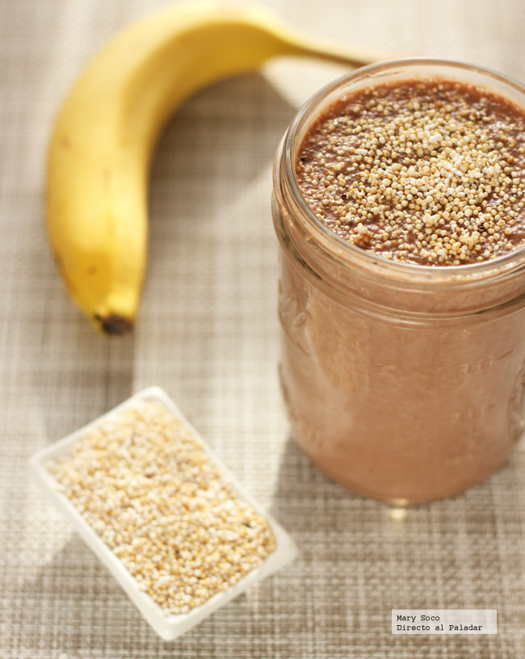

Aca va la primera imagen:
Entre las grandes propiedades nutritivas del amaranto están las proteínas, que superan a las de la mayoría de los cereales, minerales y vitaminas naturales como la A, B, C, B1, B2, B3; mucho ácido fólico (básico durante el embarazo) y niacina, calcio, hierro y fósforo. Además de aminoácidos como la lisina.